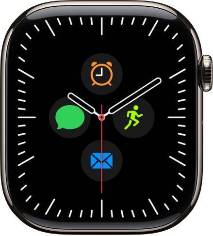

此全屏幕表盘具有附带四个子表盘的经典外观。
下方的文件数包括本地化资源。固件名称键能确认包的归属；组件的圆屏点击边界、亮屏过渡与 AOD 对照均待设备验证。
原始包 已解析属性表 Mach-O 方法与成员 ARM64 汇编 解出的图集
.strings × 176 .plist × 3 .car × 1 无扩展名 × 1
原始包 已解析属性表 Mach-O 方法与成员 ARM64 汇编 解出的图集
.strings × 176 .plist × 3 .car × 1 无扩展名 × 1
原始包 已解析属性表 Mach-O 方法与成员 ARM64 汇编 解出的图集
.strings × 176 .plist × 3 .car × 1 无扩展名 × 1
NTKBlackcombFaceBundle.bundleFACE_BLACKCOMB_DESCRIPTION_27FACE_BLACKCOMB_DESCRIPTIONhwDarkBronzehwPearlWhitehwMidnighthwLightGoldhwNightBluehwRadiantGoldhwStarlighthwNaturalhwSpaceGrayhwBlackEDIT_OPTION_LABEL_BLACKCOMB_DIAL_STYLE_MAJORONLYEDIT_OPTION_LABEL_BLACKCOMB_DIAL_STYLE_MAJORMINOREDIT_OPTION_LABEL_BLACKCOMB_BACKGROUND_OFFEDIT_MODE_BLACKCOMB_LABEL_BACKGROUNDEDIT_MODE_BLACKCOMB_LABEL_DIAL_STYLEEDIT_OPTION_LABEL_BLACKCOMB_BACKGROUND_ONEDIT_OPTION_LABEL_BLACKCOMB_DIAL_STYLE_CLASSICEDIT_MODE_BLACKCOMB_LABEL_STYLEEDIT_OPTION_LABEL_BLACKCOMB_DIAL_WHITEEDIT_OPTION_LABEL_BLACKCOMB_DIAL_BLACK色组与设备条件 Blackcomb-F2026.color.plist Blackcomb.color.plist 共享色组与默认值
-[NTKBlackcombBackgroundView applyTritiumTransitionalPalette:];-[NTKBlackcombColorPalette tritium_hourMarker];-[NTKBlackcombColorPalette tritium_hourMinuteHandsFill];-[NTKBlackcombColorPalette tritiumPalette];-[NTKBlackcombColorPalette _hourMarkerWithTritium:];-[NTKBlackcombColorPalette _hourMinuteHandsFillWithIsTritium:];+[NTKBlackcombFace tritium_burnInFaceName];-[NTKBlackcombFaceView tritium_didTransitionToTritiumOff];-[NTKBlackcombFaceView tritium_createFaceAnimator];-[NTKBlackcombFaceView tritium_responseForTapToWakeAtPoint:];-[NTKBlackcombFaceView tritium_handleAlwaysOnTapToWakeAtPoint:withResponse:withCompletion:];-[NTKBlackcombFaceView tritium_willTransitionToTritiumOnToFrameSpecifier:];-[NTKBlackcombColorPalette largeTick];-[NTKBlackcombColorPalette secondHand];-[NTKBlackcombColorPalette smallTick];-[NTKBlackcombColorPalette hourMinuteHandsFill];-[NTKBlackcombColorPalette hourMinuteHandsStroke];-[NTKBlackcombColorPalette secondDot];-[NTKBlackcombBackgroundView applyTransitionFraction:fromPalette:toPalette:];-[NTKBlackcombBackgroundView applyTransitionFractionToUsesLongSideTicks:];-[NTKBlackcombBackgroundView configureTicksForStatus:];-[NTKBlackcombBackgroundView _innerDialRadiusAtLargeTick:verticalLength:horizontalLength:];-[NTKBlackcombBackgroundView applyTritiumTransitionalPalette:];-[NTKBlackcombBackgroundView usesLongSideTicks];-[NTKBlackcombBackgroundView _outerDialRadiusAtMediumTick:verticalLength:horizontalLength:];-[NTKBlackcombBackgroundView _layoutTopLargeTick];-[NTKBlackcombBackgroundView _tickLayoutBounds];-[NTKBlackcombBackgroundView _setupTicks];-[NTKBlackcombBackgroundView setUsesLongSideTicks:];-[NTKBlackcombColorPalette _hourMinuteHandsStroke];-[NTKBlackcombColorPalette _largeTick];-[NTKBlackcombColorPalette setDialColorTransitionalPalette:];-[NTKBlackcombColorPalette _smallTick];-[NTKBlackcombColorPalette _secondDot];-[NTKBlackcombColorPalette tritium_hourMinuteHandsFill];-[NTKBlackcombColorPalette transitionalPaletteFromDialColor:toDialColor:];-[NTKBlackcombColorPalette _hourMinuteHandsFill];-[NTKBlackcombColorPalette dialColorTransitionalPalette];-[NTKBlackcombColorPalette _hourMinuteHandsFillWithIsTritium:];-[NTKBlackcombColorPalette _secondHand];-[NTKBlackcombFaceView tritium_didTransitionToTritiumOff];-[NTKBlackcombFaceView _applyTransitionFraction:fromOption:toOption:forCustomEditMode:slot:];-[NTKBlackcombFaceView tritium_createFaceAnimator];-[NTKBlackcombFaceView _secondHandColor];-[NTKBlackcombFaceView _backgroundViewShouldUseLongSideTicks];-[NTKBlackcombFaceView _updateTickLengths];-[NTKBlackcombFaceView _applyTransitionFraction:fromColorPalette:toColorPalette:];-[NTKBlackcombFaceView _applyTransitionFraction:fromColorPalette:toColorPalette:force:];-[NTKBlackcombFaceView _configureForTransitionFraction:fromEditMode:toEditMode:];-[NTKBlackcombFaceView _applyComplicationTransitionFraction:fromColorPalette:toColorPalette:];-[NTKBlackcombFaceView tritium_willTransitionToTritiumOnToFrameSpecifier:];-[NTKBlackcombPicayuneView aodAnimation];-[NTKBlackcombPicayuneView setAodAnimation:];-[NTKBlackcombColorPalette background];-[NTKBlackcombColorPalette complication];-[NTKBlackcombColorPalette largeTick];-[NTKBlackcombColorPalette secondHand];-[NTKBlackcombColorPalette smallTick];-[NTKBlackcombColorPalette alternateComplication];-[NTKBlackcombColorPalette hourMarker];-[NTKBlackcombColorPalette hourMinuteHandsFill];-[NTKBlackcombColorPalette hourMinuteHandsStroke];-[NTKBlackcombColorPalette platterText];-[NTKBlackcombColorPalette secondDot];-[NTKBlackcombBackgroundView applyPalette:];-[NTKBlackcombBackgroundView applyTransitionFraction:fromPalette:toPalette:];-[NTKBlackcombBackgroundView _applyBackgroundColor:];-[NTKBlackcombBackgroundView applyTritiumTransitionalPalette:];-[NTKBlackcombBackgroundView _layoutTopLargeTick];-[NTKBlackcombBackgroundView _tickLayoutBounds];-[NTKBlackcombColorPalette _alternateComplication];-[NTKBlackcombColorPalette usesUpdate27Coloring];-[NTKBlackcombColorPalette _hourMinuteHandsStroke];-[NTKBlackcombColorPalette _largeTick];-[NTKBlackcombColorPalette identifier];-[NTKBlackcombColorPalette setDialColorTransitionalPalette:];-[NTKBlackcombColorPalette _hourMarker];-[NTKBlackcombColorPalette tritium_hourMarker];-[NTKBlackcombColorPalette initWithDevice:];-[NTKBlackcombColorPalette _smallTick];-[NTKBlackcombColorPalette _secondDot];-[NTKBlackcombColorPalette tritium_hourMinuteHandsFill];-[NTKBlackcombColorPalette tritiumPalette];-[NTKBlackcombColorPalette transitionalPaletteFromDialColor:toDialColor:];-[NTKBlackcombColorPalette _background];-[NTKBlackcombColorPalette _platterText];-[NTKBlackcombColorPalette _complication];-[NTKBlackcombColorPalette _hourMarkerWithTritium:];-[NTKBlackcombColorPalette _hourMinuteHandsFill];-[NTKBlackcombColorPalette dialColorStyle];-[NTKBlackcombColorPalette dialColorTransitionalPalette];-[NTKBlackcombColorPalette init];-[NTKBlackcombColorPalette setDialColorStyle:];-[NTKBlackcombColorPalette setUsesUpdate27Coloring:];-[NTKBlackcombColorPalette _hourMinuteHandsFillWithIsTritium:];-[NTKBlackcombColorPalette _secondHand];-[NTKBlackcombColorPalette copyWithZone:];-[NTKBlackcombColorPalette richComplicationViewTheme];+[NTKBlackcombFace _initialDefaultComplicationForSlot:forDevice:];+[NTKBlackcombFace _complicationSlotDescriptors];+[NTKBlackcombFace _richComplicationSlotsForDevice:];+[NTKBlackcombFace _orderedComplicationSlots];+[NTKBlackcombFace _defaultSelectedComplicationSlotForDevice:];-[NTKBlackcombFace complicationsColorRenderingUsage];-[NTKBlackcombFace _numberOfOptionsForCustomEditMode:slot:];-[NTKBlackcombFace _defaultOptionForCustomEditMode:slot:];-[NTKBlackcombFace _indexOfOption:forCustomEditMode:slot:];-[NTKBlackcombFace allowedComplicationsForSlot:includingComplication:];-[NTKBlackcombFace _optionAtIndex:forCustomEditMode:slot:];-[NTKBlackcombFaceBundle complicationTypesBySlot];-[NTKBlackcombFaceBundle activityComplicationTypesBySlot];-[NTKBlackcombFaceView complicationFactory];-[NTKBlackcombFaceView updateWithColorPalette:];-[NTKBlackcombFaceView _homeScreenDateLabelColor];-[NTKBlackcombFaceView _updateHandsColorsFromColorPalette:toColorPalette:fraction:];-[NTKBlackcombFaceView _forceUpdateColors];-[NTKBlackcombFaceView _homeScreenBackgroundColor];-[NTKBlackcombFaceView createFaceColorPalette];-[NTKBlackcombFaceView _legacyLayoutOverrideforComplicationType:slot:];-[NTKBlackcombFaceView _dialColorStyle];-[NTKBlackcombFaceView _applyTransitionFraction:fromOption:toOption:forCustomEditMode:slot:];-[NTKBlackcombFaceView layoutSubviews];-[NTKBlackcombFaceView _applyBreathingFraction:forCustomEditMode:slot:];-[NTKBlackcombFaceView _isBlackColor];-[NTKBlackcombFaceView _isMulticolor];-[NTKBlackcombFaceView _applyOption:forCustomEditMode:slot:];-[NTKBlackcombFaceView _prepareForEditing];-[NTKBlackcombFaceView _cleanupAfterEditing];-[NTKBlackcombFaceView _keylineViewForComplicationSlot:];-[NTKBlackcombFaceView _secondHandColor];-[NTKBlackcombFaceView _keylineStyleForComplicationSlot:];-[NTKBlackcombFaceView _platterTextColorForEditMode:color:];-[NTKBlackcombFaceView _platterTextColorForEditMode:];-[NTKBlackcombFaceView _applyTransitionFraction:fromColorPalette:toColorPalette:];-[NTKBlackcombFaceView _applyTransitionFraction:fromColorPalette:toColorPalette:force:];-[NTKBlackcombFaceView _configureComplicationView:forSlot:];-[NTKBlackcombFaceView _loadLayoutRules];-[NTKBlackcombFaceView _homeScreenDateLabelInactiveColor];-[NTKBlackcombFaceView _isComplicationSlotInsideDial:];-[NTKBlackcombFaceView _newLegacyViewForComplication:family:slot:];-[NTKBlackcombFaceView layoutConfigurationForSlot:];-[NTKBlackcombFaceView _updateHandsColors];-[NTKBlackcombFaceView _applyComplicationTransitionFraction:fromColorPalette:toColorPalette:];-[NTKBlackcombFaceView _applyRubberBandingFraction:forCustomEditMode:slot:];-[NTKBlackcombFaceView _complicationPickerStyleForSlot:];-[NTKBlackcombFaceView updateBlackcombDialColorStyle:];-[NTKBlackcombPicayuneView layoutSubviews];-[NTKBlackcombPicayuneView _setColorsWithColorPalette:tritumProgress:];-[NTKBlackcombPicayuneViewConfiguration setColorPalette:];-[NTKBlackcombPicayuneViewConfiguration colorPalette];-[NTKBlackcombDialColorEditOption localizedName];